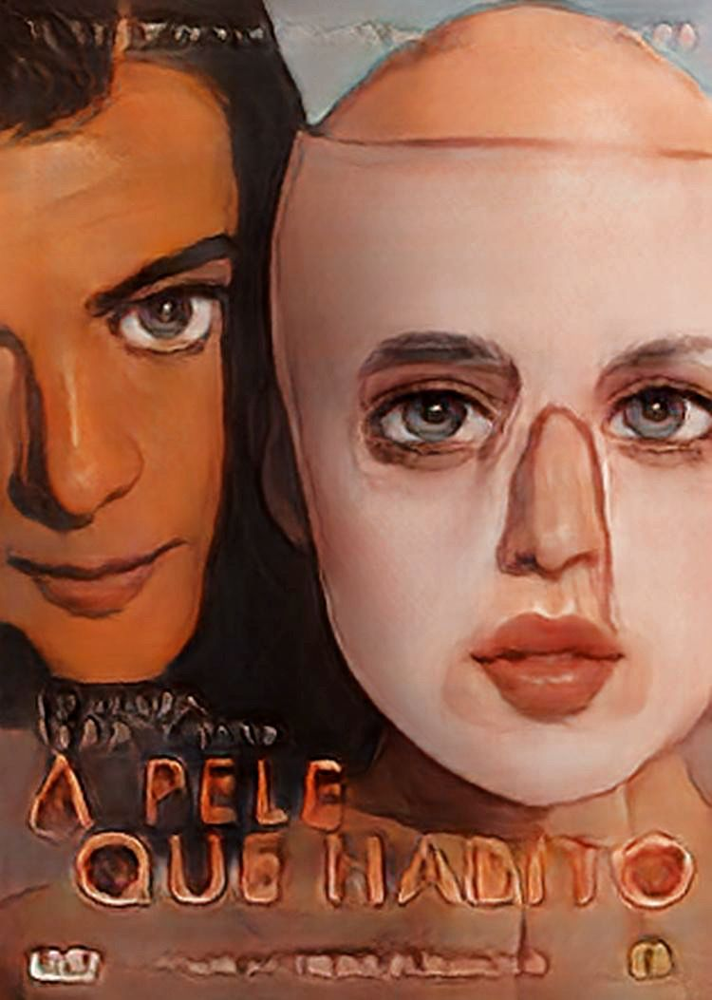
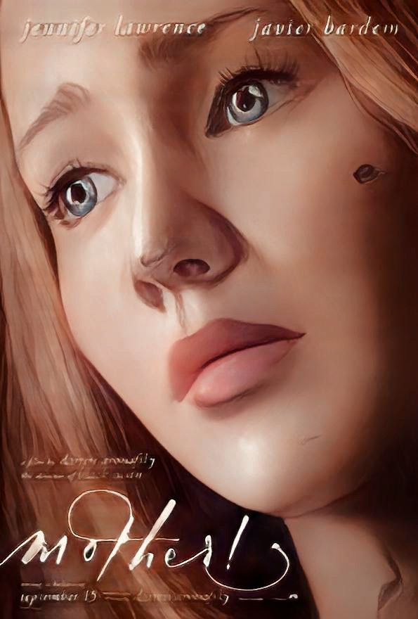

Filme: A
Chegada
Prêmios:
- Critics' Choice 2016: Melhor roteiro adaptado
- Critics' Choice 2016: Melhor filme sci-fi/terror
- National Board of Review: Melhor atriz(Ammy Adams)
- Oscar 2017: Melhor edição de som
Tomatometer:
- 95%

Filme:
A pele em que habito
Prêmios:
- BAFTA 2012: Melhor filme estrangeiro
- Festival de Cannes 2011: Prêmio da juventude
- Saturn Award 2011:Melhor filme estrangeiro
Tomatometer:
- 81%

Filme:
Mãe!
Prêmios:
- New Mexico Film Critics: Melhor Atriz (Jennifer Lawrence)
Tomatometer:
- 68%